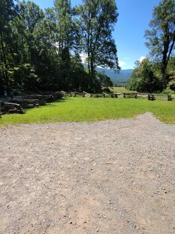
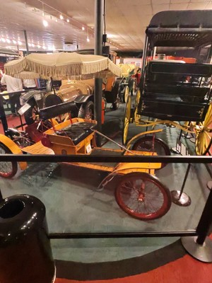
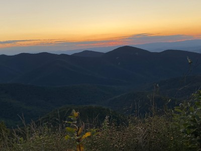
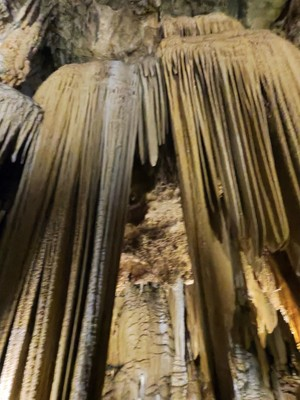

The call came quietly — not in words, but in a restlessness that only open roads can cure. Southern charm. Mountain silhouettes. Air that tastes different, cleaner, like it's been filtered through a thousand pine trees before it reaches you. That was all the reason we needed.
We packed our bags, brewed a thermos of coffee, and pointed the car south from Boston as midnight approached. What followed was five days of winding mountain highways, misty valley mornings, crystal waterfalls, and moments so beautiful they almost didn't seem real.
This is the story of that journey — mile by mile, sunrise by sunrise. 1100 miles overnight, 5 states, Cades Cove bears, Abrams Falls, Roanoke River tubing, Natural Bridge, Virginia Safari Park, and Luray Caverns' organ of stone.
Day One — Aug 28-29, 2025
Chasing the Road at Midnight
Boston, MA → Pigeon Forge, TN · ~1,100 miles overnight · 17 hrs driving
There's something almost sacred about leaving a city at night. As we rolled out of Boston just after 11 pm, the streets were hushed — amber streetlights casting long reflections on empty asphalt, the city slowly dissolving in our rearview mirror. Playlists queued, snacks arranged within arm's reach, the open highway stretching ahead like a promise.
"Night travel has its own rhythm — quiet highways, glowing diners, and the strange intimacy of the dark."
We drove through the sleeping world, catching glimpses of rivers lit by moonlight and small towns where not a single soul stirred. Every now and then, a lone truck rumbled past, its lights blinking like a distant lighthouse.
Dawn arrived slowly, the sky shifting from ink to slate to pale gold. Rolling hills emerged from the darkness, farmhouses appearing one by one, smoke already curling from their chimneys.
Scranton welcomed us in soft morning light — brick streets, strong coffee, eggs fried just right. We snapped a photo by the iconic city sign before rolling south again.
Virginia entered like a painting being unveiled. Dense forest, patchwork farmland, ridgelines that seem to go on forever. We rolled down the windows.
After 13 hours on the road, Harrisonburg felt like a gift. We stretched aching backs, discovered vibrant street murals, and lingered over lunch where the bread was fresh-baked and the pace of life seemed deliberately slower.
The Appalachians rose around us, forests thickened, and the road curved through valleys that seemed untouched by time. We arrived tired, windswept, and completely alive.
Gatlinburg & Clingmans Dome at Sunset
The winding roads of Gatlinburg had us pulling over every few minutes. As the afternoon deepened, we drove up to Clingmans Dome — the highest point in the Smokies. The sky transformed: rose fading into tangerine, violet bleeding into deep blue. Tennessee one way, North Carolina the other. We stood there silently. Some moments don't need words.
Back in Pigeon Forge, the town buzzed with music, neon, and laughter. A Pirates of the Caribbean-themed attraction, quirky shops, and full hearts. The perfect end to a long day.
Day Two — Aug 29
Into the Wild — Cades Cove Bears & Abrams Falls
Cades Cove & Abrams Falls · Great Smoky Mountains National Park · 11-mile loop
The Smokies in the morning are something else — damp pine drifting through the window, light still soft and golden. We headed to Cades Cove, a valley that seems to exist in a different century.

We rounded a bend and stopped. A black bear cub was nosing through the undergrowth, its mother a watchful silhouette nearby. We cut the engine. Nobody spoke. The bears moved at their own unhurried pace, indifferent to our wonder. Deer appeared later, grazing in the meadows. The kind of moment you can't plan for — you can only be grateful when it happens.
"The loop road opened to wide green fields framed by layers of blue ridges. It was so still, even the sound of tires felt too loud."
Abrams Falls Trail — 5 Miles Roundtrip
The sound of rushing water grew louder with every step. When the falls finally revealed themselves — powerful, white, crashing into a moss-rimmed pool — the effect was almost theatrical. We sat on the rocks for a long while, the mist cooling our faces, saying nothing in particular.
We said goodbye to the Smokies in golden hour light, the mountains receding in our mirrors like a slow exhale. By the time we reached Roanoke, the sky had turned violet, and a new city was waiting.
Day Three — Aug 30
River Whispers & Mountain Sunsets
Roanoke River Tubing · Museum of Transportation · Natural Bridge · Shenandoah
We drove misty country roads to the Roanoke River, where rental tubes waited at the bank like floating invitations. The moment we pushed off into the current, the world simplified. For two hours we drifted — through shadow and sunlight, past wildflowers, no phones, no plans. Just the current and the trees.
Virginia Museum of Transportation

The steam engines are staggering up close. The air inside smells faintly of iron and engine oil, and standing next to a locomotive that once crossed continents makes modern life feel briefly small. We lingered three hours and could have stayed longer.
Natural Bridge State Park — 215 ft Arch
The enormous limestone arch — 215 feet high, carved over millennia by a small stream — stands with the quiet confidence of something ancient. Walking beneath it feels like entering a cathedral. It left us wordless in the best way.
Sunset at Shenandoah

The valley below glowed gold. Ridgelines turned purple. The sky shifted through every warm color it knew. Deer grazed calmly by the roadside. The sun slipped behind the mountains and there was that perfect hush — the moment just after a beautiful thing happens, when the world seems to catch its breath.
"It wasn't just about the places we'd seen — it was how they made us feel. Calm. Connected. Deeply grateful."
Day Four — Aug 31
Into the Wild, Again — Virginia Safari Park
Virginia Safari Park & Zoo · Natural Bridge, VA
We woke already smiling. We drove slowly through the safari park with buckets of feed, windows open. A llama appeared at the window — not beside it, in it — neck craning toward the bucket. Zebras pressed their noses against the car with surprising dignity. Ostriches were less dignified: bold, comic, stealing entire handfuls of food while we shrieked with laughter.
The deer were the unexpected highlight. One small fawn with dappled spots tapped my hand so gently I thought I'd imagined it, then looked up with enormous dark eyes as if to say: more, please. We gave it more.
"Hands sticky, hair ruffled by curious noses, feed crumbs everywhere — and we couldn't have cared less."
The Birds' Room
The zoo's aviary was a different kind of magic — quieter, more intimate. Tiny colorful birds landed on hands and shoulders without invitation. Wings brushed our arms. One bird perched on my shoulder and stayed for an extraordinary amount of time, clearly unbothered. Delicate, close, and just as unforgettable.
Day Five — Sep 1-2
Beneath the Earth & Heading Home
Luray Caverns, Virginia → Boston · 480 miles · 8 hrs
"Some adventures take you above ground. Others take you deep beneath it — into a world millions of years in the making."

We arrived early and stepped from warm sunlight into cool, mineral-scented air. Stalactites hung like stone chandeliers, stalagmites rose to meet them, and mirror-still pools reflected the formations above. Every corner revealed something more astonishing than the last.
The Great Stalacpipe Organ stopped us in our tracks: mallets gently striking stalactites across 3.5 acres of cavern, producing tones that echo through the stone — part music, part ancient resonance. Haunting and beautiful. No photograph can hold it.
Emerging back into sunlight felt briefly disorienting — like being returned to a world that had continued without you. The caverns' gardens offered a gentle re-entry: flowers in bloom, birdsong, and fresh air carrying the memory of stone and time.
Homeward Bound — 480 Miles North
After a long lunch and one last pass through the gift shop — small crystals finding their way into our bags — we pointed the car north. The miles home felt different. Quieter. Reflective. We talked about everything: the bear and her cub, the sunset over Shenandoah, the fawn's tap, the cavern's impossible organ.
We arrived home after dark, carrying the kind of tiredness that feels earned and good. Five days. Five states. Mountains, rivers, caverns, and creatures. The kind of trip that doesn't just give you memories — it gives you a different way of seeing.
Until the next road calls.
Tales From The Suitcase · Boston to the Smokies · 2025